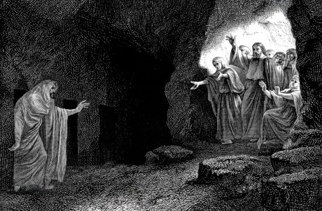

LIÇÕES BÍBLICAS CPAD
ADULTOS
2º Trimestre de 2025
Título: E o Verbo se fez carne — Jesus sob o olhar do Apóstolo do amor
Comentarista: Elienai Cabral
Lição 7: “Eu sou a ressureição e a vida”
Data: 18 de maio de 2025

TEXTO ÁUREO
“Disse-lhe Jesus: Eu sou a ressurreição e a vida; quem crê em mim, ainda que esteja morto, viverá;” (Jo 11.25).
VERDADE PRÁTICA
O Senhor Jesus Cristo é a ressurreição e a vida, e por essa razão, temos a garantia de que um dia teremos um corpo glorioso como o dEle.
LEITURA BÍBLICA EM CLASSE
João 11.14,15,17-21,23-27.
14 — Então, Jesus disse-lhes claramente: Lázaro está morto,
15 — e folgo, por amor de vós, de que eu lá não estivesse, para que acrediteis.
17 — Chegando, pois, Jesus, achou que já havia quatro dias que estava na sepultura.
18 — (Ora, Betânia distava de Jerusalém quase quinze estádios.)
19 — E muitos dos judeus tinham ido consolar a Marta e a Maria, acerca de seu irmão.
20 — Ouvindo, pois, Marta que Jesus vinha, saiu-lhe ao encontro; Maria, porém, ficou assentada em casa.
21 — Disse, pois, Marta a Jesus: Senhor, se tu estivesses aqui, meu irmão não teria morrido.
23 — Disse-lhe Jesus: Teu irmão há de ressuscitar.
24 — Disse-lhe Marta: Eu sei que há de ressuscitar na ressurreição do último Dia.
25 — Disse-lhe Jesus: Eu sou a ressurreição e a vida; quem crê em mim, ainda que esteja morto, viverá;
26 — e todo aquele que vive e crê em mim nunca morrerá. Crês tu isso?
27 — Disse-lhe ela: Sim, Senhor, creio que tu és o Cristo, o Filho de Deus, que havia de vir ao mundo.
INTRODUÇÃO
O encontro de Jesus com Marta, ao chegar a Betânia, revela aspectos especiais que poderão edificar a nossa vida espiritual por meio do estudo da Palavra de Deus. Nesta lição, iremos refletir sobre o propósito de Jesus ao realizar o milagre da ressurreição de Lázaro.
Iremos também nos aprofundar no diálogo entre Jesus e Marta sobre a ressurreição do seu irmão e, além disso, a partir do milagre de Lázaro, vamos examinar a doutrina fundamental da Ressurreição do Corpo, tal como é ensinada por Jesus e todo o Novo Testamento.
Palavra-Chave:
VIDA
I. O PROPÓSITO DE JESUS
1. Recebimento da notícia sobre Lázaro. Nos Evangelhos, Jesus realizou diversos milagres de ressurreição, incluindo o do filho da viúva de Naim (Lc 7.11-15) e o da filha de Jairo (Mc 5.22,23,35-42). O milagre da ressurreição de Lázaro é o que estamos abordando. Este é o último dos sete sinais (milagres) encontrados no Evangelho de João e representa a manifestação final de Jesus como Filho de Deus antes da sua crucificação. O capítulo 11 liga-se ao contexto do capítulo 10, em que Jesus se afasta de Jerusalém após uma tentativa de prisão e se dirige para além do Jordão (Jo 10.40-42). Ao ser informado sobre a doença de Lázaro, Jesus estava já a leste do Jordão (Jo 10.40) e levaria alguns dias até chegar a Betânia, onde encontrou Lázaro morto há quatro dias (Jo 11.17).
2. O desapontamento de Maria e Marta. O versículo 3 expressa a esperança de Maria e Marta em relação à chegada de Jesus para ajudá-las. Devido ao carinho e à amizade que nosso Senhor tinha pela família de Betânia, pois Ele os amava, elas desejavam ardentemente que Jesus chegasse rapidamente (Jo 11.5). No entanto, a visita dEle no tempo de Maria e Marta não se concretizou. É fundamental destacar que a vontade soberana de Deus não está sujeita às circunstâncias humanas, por mais difíceis que estas sejam. Contudo, Jesus nunca chega atrasado nem adiantado no cumprimento da vontade do Pai. Ele chegou a Betânia no momento certo, ainda que após o sepultamento de Lázaro.
3. O tempo divino. Maria e Marta acreditavam que, se Jesus estivesse em Betânia, Ele poderia realizar um milagre na vida de Lázaro. Elas tinham plena consciência de que nosso Senhor é o Filho de Deus. No entanto, o plano do Pai não coincidia com o delas. Apesar da desilusão e da tristeza, Maria e Marta iriam vivenciar uma experiência extraordinária de espera, que envolveria a perda do ente querido, a ausência temporária de Jesus e a chegada aparentemente tardia do Senhor (Jo 11.14,17-22). Contudo, Jesus Cristo estava prestes a realizar um magnífico milagre, que glorificaria a Deus e traria consolo à amada família de Betânia.
II. O ENCONTRO DE MARTA COM JESUS
1. O encontro. O versículo 20 descreve o momento em que Marta se encontra com Jesus. Assim que soube que o Senhor estava na cidade, a irmã de Maria dirigiu-se ao encontro dele. Ao vê-lo, expressou a sua convicção de que, se o Mestre estivesse presente quando Lázaro ainda estava doente, o seu irmão não teria falecido (Jo 11.21). Jesus afirmou que Lázaro iria “ressuscitar” (v.23). Embora Marta acreditasse que Jesus poderia realizar um milagre extraordinário (v.22), ela não percebeu que o Senhor falava sobre a ressurreição de Lázaro naquele momento específico (Jo 11.24). Na realidade, viver entre a promessa do Senhor Jesus e as circunstâncias da vida é um grande desafio para a fé. No entanto, aquEle que é a ressurreição e a vida estava ali diante dela (vv.25,26).
2. Quando Lázaro ressuscitará? O diálogo entre Marta e Jesus revela que ela cria na doutrina da ressurreição dos mortos, tal como era ensinada no Judaísmo: “Eu sei que há de ressuscitar na ressurreição do último Dia” (Jo 11.24). Contudo, Jesus não se referia primeiramente ao milagre da Ressurreição do Último Dia, como ela pensava, mas sim à realidade daquele instante presente. Para ilustrar essa verdade, Ele declara: “Eu sou a ressurreição e a vida” (v.25). Enquanto Marta apresentava uma doutrina defendida pelos fariseus, embora correta e verdadeira, nosso Senhor revelou a doutrina da Ressurreição associada à sua própria Pessoa ao trazer Lázaro de volta à vida de maneira concreta (vv.43,44).
3. Promessa de vida. Na resposta de Jesus à Marta, quando Ele afirma ser a “ressurreição e a vida” (Jo 11.25), encontramos pelo menos duas lições valiosas. Primeiro, a soberania do Filho sobre a morte e a vida; ao se identificar como a “ressurreição”, Ele coloca-se como fonte de toda vida, tanto no plano material quanto espiritual. Segundo, existe uma gloriosa promessa de vida para “quem crê em mim” (v.26). Assim sendo, aqueles que creem em Cristo recebem uma abundância de vida em todos os sentidos — tanto material quanto espiritual — pois uma vida entregue a Cristo é uma vida plena.
III. A DOUTRINA BÍBLICA DA RESSURREIÇÃO DO CORPO
1. A Ressurreição do Corpo. O milagre da ressurreição física de Lázaro, realizado por Jesus, não foi o único (Jo 11.23,24). Como já observamos, outros milagres semelhantes estão registrados nos Evangelhos. No entanto, ao contrário do que aconteceu com Lázaro, que voltou a morrer, em João 5 o nosso Senhor menciona a Ressurreição do Corpo para os últimos dias, quando os salvos não experimentarão mais a morte (Jo 5.28,29). A doutrina da Ressurreição do Corpo é um elemento essencial do Cristianismo Bíblico. O apóstolo Paulo refere-se à mesma ressurreição que abrange todos os mortos, justos e injustos, diferenciando os tempos (1Co 15). Assim sendo, os justos ressuscitarão quando a trombeta tocar durante o Arrebatamento da Igreja; os mortos voltarão à vida e seus corpos serão gloriosamente transformados junto com os justos (1Co 15.42; 1Ts 4.13-17); por outro lado, os injustos ressuscitarão no Juízo Final e receberão um corpo inglório destinado à condenação eterna (2Ts 1.9; Ap 20.11-15).
2. Da morte para a vida. Na conversa entre Jesus e Marta também se evidenciava a perspectiva da doutrina da Ressurreição do Corpo (Jo 11.26). A expressão “nunca morrerá”, mencionada no versículo 26, indica que embora o salvo em Cristo experimente a morte física, nunca enfrentará a morte espiritual. O nosso Senhor fala de algo que vai além da compreensão humana e distingue entre vida natural e vida eterna. Assim sendo, conforme diz “ainda que esteja morto viverá” (v.25), para o crente a morte não representa um fim sem esperança. Pelo contrário, sob uma ótica bíblica e segundo os ensinamentos de Jesus, a morte é uma transição para a vida eterna, onde a Ressurreição do Corpo marca o início de uma nova realidade e natureza espiritual.
3. Uma viva esperança. O relato sobre a ressurreição de Lázaro demonstra como Jesus Cristo abordou o tema da morte de entes queridos. Ele sentiu compaixão, chorou e manifestou preocupação porque sabia das dores causadas pela morte (Jo 11.35-39). Contudo, ao declarar sobre Lázaro: “Lázaro, vem para fora” (v.43), nosso Senhor revela aquilo que o Deus Todo-Poderoso realizará na vida de todos aqueles que morreram em Cristo (Jo 14.3). Ao ressuscitar Lázaro, Ele evidencia concretamente que também ressuscitará dentre os mortos aqueles que foram salvos; esta é a nossa viva esperança!
CONCLUSÃO
Esta lição explorou o diálogo entre Jesus e Marta, onde se manifestaram as dúvidas da irmã de Maria juntamente com as questões referentes à doutrina da Ressurreição do Corpo. O milagre realizado na ressurreição de Lázaro ilustra uma verdade muito mais ampla e profunda: haverá um tempo em que aqueles que morreram em Cristo ressuscitarão e terão seus corpos gloriosamente transformados. Esta doutrina pode ser ilustrada por meio do episódio da ressurreição de Lázaro.
REVISANDO O CONTEÚDO
1. O que é que João 11.3 revela?
João 11.3 expressa a esperança de Maria e Marta em relação à chegada de Jesus para ajudá-las.
2. Qual é a primeira lição encontrada na resposta de Jesus a Marta?
Primeiro, é a soberania do Filho sobre a morte e a vida; ao se identificar como a “ressurreição”.
3. Qual é a segunda lição contida na resposta de Jesus a Marta?
Segundo, existe uma gloriosa promessa de vida para “quem crê em mim” (v.26). Assim sendo, aqueles que creem em Cristo recebem uma abundância de vida em todos os sentidos.
4. O que indica a expressão “nunca morrerá”?
A expressão “nunca morrerá”, mencionada no versículo 26, indica que embora o salvo em Cristo experimente a morte física, nunca enfrentará a morte espiritual.
5. Qual é a nossa esperança viva?
Ao ressuscitar Lázaro, Ele evidencia concretamente que também ressuscitará dentre os mortos aqueles que foram salvos; esta é a nossa viva esperança!